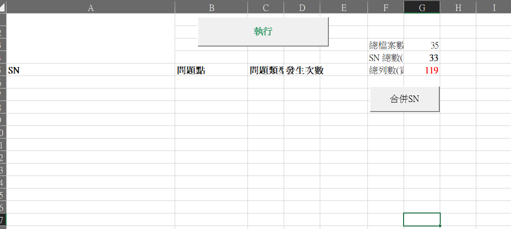
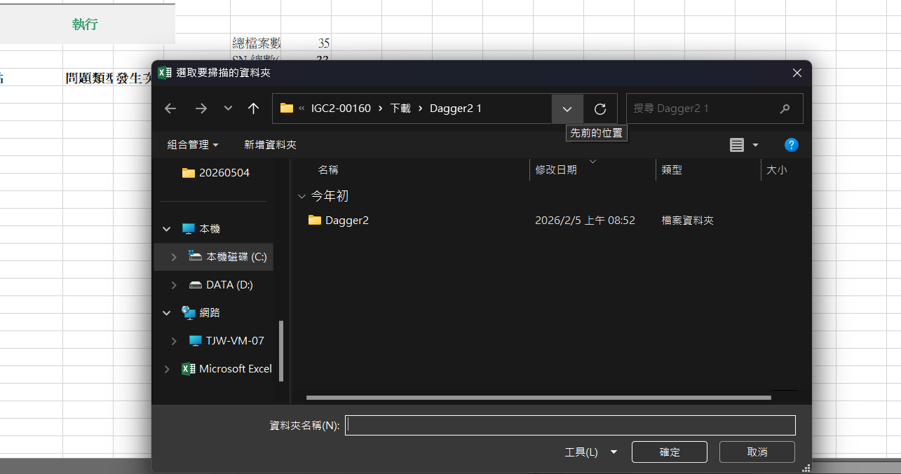
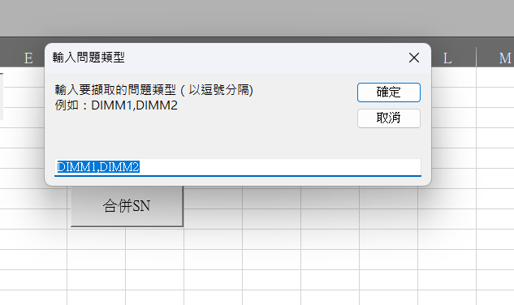
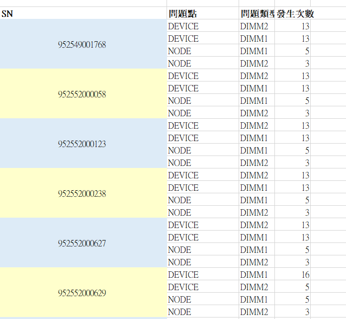

👉 把這三件事「全部自動化」




👉 不需要手動整理，系統會自動完成
原本：人工一筆一筆看
現在：直接產出整理好的結果
| SN | 問題點 | 出現次數 |
|---|---|---|
| ABC123 | DIMM1 | 3 |
Option Explicit
'=== 檔案讀取 ===
Private Function ReadAllLines(ByVal filePath As String) As Variant
Dim fso As Object, ts As Object, lines As Collection, line As String
Set fso = CreateObject("Scripting.FileSystemObject")
If Not fso.FileExists(filePath) Then
ReadAllLines = Array()
Exit Function
End If
Set ts = fso.OpenTextFile(filePath, 1, False)
Set lines = New Collection
Do While Not ts.AtEndOfStream
line = ts.ReadLine
lines.Add line
Loop
ts.Close
Dim arr() As String, i As Long
ReDim arr(0 To lines.Count - 1)
For i = 1 To lines.Count
arr(i - 1) = lines(i)
Next
ReadAllLines = arr
End Function
'===字串處理 ===
Private Function TrimBoth(ByVal s As String) As String
TrimBoth = Trim$(s)
End Function
Private Function TryExtractSN(ByVal line As String, ByRef outSN As String) As Boolean
Const key As String = "Board Serial Number:"
Dim p As Long
p = InStr(1, line, key, vbBinaryCompare)
If p <= 0 Then
TryExtractSN = False
Exit Function
End If
outSN = TrimBoth(Mid$(line, p + Len(key)))
TryExtractSN = (Len(outSN) > 0)
End Function
Private Function ContainsPattern(ByVal text As String, ByVal pattern As String) As Boolean
Dim t As String, p As String
t = UCase$(text)
p = UCase$(pattern)
ContainsPattern = (t Like "*" & p & "*")
End Function
' 逗號分隔字串轉陣列
Private Function ParseCsvList(ByVal s As String, ByVal defaultText As String) As Variant
Dim raw As String
raw = Trim$(s)
If Len(raw) = 0 Then raw = defaultText
Dim parts() As String
parts = Split(raw, ",")
Dim i As Long, buf As Collection
Set buf = New Collection
For i = LBound(parts) To UBound(parts)
Dim token As String
token = Trim$(parts(i))
If Len(token) > 0 Then buf.Add token
Next
If buf.Count = 0 Then buf.Add defaultText
Dim arr() As String
ReDim arr(0 To buf.Count - 1)
For i = 1 To buf.Count
arr(i - 1) = buf(i)
Next
ParseCsvList = arr
End Function
'===資料夾選取===(使用路徑輸入)
Private Function GetFolderPathsFromSheet(ByVal ws As Worksheet) As Collection
Dim paths As New Collection
Dim r As Long: r = 2
Do While Len(Trim$(CStr(ws.Cells(r, 1).Value))) > 0
paths.Add Trim$(CStr(ws.Cells(r, 1).Value))
r = r + 1
Loop
Set GetFolderPathsFromSheet = paths
End Function
'===資料夾選取===(使用視窗選取)
Private Function PickMultipleFolders() As Collection
Dim result As New Collection
On Error GoTo PickerFallback
Dim fd As FileDialog
Set fd = Application.FileDialog(msoFileDialogFolderPicker)
With fd
.Title = "選取要掃描的資料夾"
.AllowMultiSelect = True
If .Show = -1 Then
Dim i As Long
For i = 1 To .SelectedItems.Count
result.Add .SelectedItems(i)
Next
End If
End With
Set PickMultipleFolders = result
Exit Function
PickerFallback:
Dim fd2 As FileDialog
Set fd2 = Application.FileDialog(msoFileDialogFolderPicker)
With fd2
.Title = "選取要掃描的資料夾"
.AllowMultiSelect = False
If .Show = -1 Then
result.Add .SelectedItems(1)
End If
End With
Set PickMultipleFolders = result
End Function
'=== 主程式 ===
Public Sub ScanLogs_SummaryOnly()
Dim ws As Worksheet
Set ws = ActiveSheet
' --- (Step 1) 取得資料夾清單 ---
Dim folderPaths As Collection
Set folderPaths = GetFolderPathsFromSheet(ws)
If folderPaths.Count = 0 Then
Set folderPaths = PickMultipleFolders()
If folderPaths.Count = 0 Then
MsgBox "未提供任何資料夾路徑。請在 A2 開始貼上路徑，或在提示視窗中選擇資料夾。", vbExclamation
Exit Sub
End If
End If
' --- (Step 2) 取得使用者輸入的關鍵字 ---
Dim rawIssueTypes As String, rawIssuePoints As String
rawIssueTypes = InputBox( _
Prompt:="輸入要擷取的問題類型（以逗號分隔)" & vbCrLf & _
"例如：DIMM1,DIMM2 ", _
Title:="輸入問題類型", Default:="DIMM1,DIMM2")
rawIssuePoints = InputBox( _
Prompt:="輸入要擷取的問題點（以逗號分隔)" & vbCrLf & _
"例如：Device,Node", _
Title:="輸入問題點", Default:="Device,Node")
If rawIssueTypes = "" Or rawIssuePoints = "" Then Exit Sub
Dim issueTypes As Variant, issuePoints As Variant
issueTypes = ParseCsvList(rawIssueTypes, "DIMM1")
issuePoints = ParseCsvList(rawIssuePoints, "Device,Node")
' --- (Step 3) 清空輸出區 ---
ws.Range("A6:Z100000").Clear
ws.Range("F3:G10").ClearContents ' 清除舊的統計數據
' 設定表頭
ws.Range("A5:D5").Value = Array("SN", "問題點", "問題類型", "發生次數")
ws.Range("A5:D5").Font.Bold = True
' --- (Step 4) 開始掃描檔案 ---
Dim fso As Object: Set fso = CreateObject("Scripting.FileSystemObject")
Dim counts As Object: Set counts = CreateObject("Scripting.Dictionary")
counts.CompareMode = 1
Dim totalFiles As Long: totalFiles = 0
Dim totalKeys As Long
Application.ScreenUpdating = False
Application.Calculation = xlCalculationManual '自動運算格->手動運算格(增進運行速度)
Dim folderPath As Variant
For Each folderPath In folderPaths
If fso.FolderExists(CStr(folderPath)) Then
Dim folder As Object, file As Object
Set folder = fso.GetFolder(CStr(folderPath))
For Each file In folder.Files
'讀入檔案(確認總檔數)
If LCase$(fso.GetExtensionName(file.Name)) = "txt" Then
totalFiles = totalFiles + 1
Dim lines As Variant
lines = ReadAllLines(file.Path)
If Not IsArray(lines) Then GoTo NextFile
'擷取SN
Dim sn As String: sn = ""
Dim i As Long
' 逐行讀取
For i = LBound(lines) To UBound(lines)
Dim line As String
line = lines(i)
' A. 抓取 SN (每個檔案只抓一次)
If Len(sn) = 0 Then
Dim snTmp As String
If TryExtractSN(line, snTmp) Then sn = snTmp
End If
' B. 檢查是否包含關鍵字
Dim pointsFound As Collection: Set pointsFound = New Collection
Dim typesFound As Collection: Set typesFound = New Collection
Dim p As Long, t As Long
For p = LBound(issuePoints) To UBound(issuePoints)
If ContainsPattern(line, CStr(issuePoints(p))) Then
pointsFound.Add CStr(issuePoints(p))
End If
Next
For t = LBound(issueTypes) To UBound(issueTypes)
If ContainsPattern(line, CStr(issueTypes(t))) Then
typesFound.Add CStr(issueTypes(t))
End If
Next
' C. 若同時命中，加入 Dictionary 計數
If pointsFound.Count > 0 And typesFound.Count > 0 Then
Dim pp As Long, tt As Long, key As String
For pp = 1 To pointsFound.Count
For tt = 1 To typesFound.Count
' Dictionary 預設依加入順序排列，因此同檔(同SN)的資料會自然排在一起
key = UCase$(sn) & "|" & UCase$(CStr(pointsFound(pp))) & "|" & UCase$(CStr(typesFound(tt)))
If counts.Exists(key) Then
counts(key) = counts(key) + 1
Else
counts.Add key, 1
End If
Next tt
Next pp
End If
Next i
End If
NextFile:
Next file
End If
Next folderPath
' --- (Step 5) 寫回 Excel ---
Dim rowOut As Long: rowOut = 6
Dim k As Variant, parts() As String
For Each k In counts.Keys
parts = Split(CStr(k), "|") ' 拆解 Key
ws.Cells(rowOut, 1).Value = parts(0) ' SN
ws.Cells(rowOut, 2).Value = parts(1) ' 問題點
ws.Cells(rowOut, 3).Value = parts(2) ' 問題類型
ws.Cells(rowOut, 4).Value = counts(k)
rowOut = rowOut + 1
Next k
totalKeys = counts.Count
Dim lastRow As Long
lastRow = rowOut - 1
' --- (Step 6) 顏色標記與計算唯一 SN 總數 ---
Dim totalUniqueSN As Long: totalUniqueSN = 0
If lastRow >= 6 Then
' 定義顏色：淺藍 / 淺黃
Dim colorBlue As Long: colorBlue = RGB(221, 235, 247)
Dim colorYellow As Long: colorYellow = RGB(255, 255, 204)
Dim useBlue As Boolean: useBlue = False ' 初始狀態
Dim curSN As String, prevSN As String
Dim rRow As Long
prevSN = "" ' 用來記錄上一列的 SN
For rRow = 6 To lastRow
curSN = Trim$(CStr(ws.Cells(rRow, 1).Value))
' 如果 SN 改變了 (或者遇到第一筆資料)
If curSN <> prevSN Then
totalUniqueSN = totalUniqueSN + 1 ' 發現新 SN，計數+1
useBlue = Not useBlue ' 切換顏色開關
prevSN = curSN ' 更新上一列 SN
End If
' 填入顏色 (只填 SN 欄位)
If useBlue Then
ws.Cells(rRow, 1).Interior.Color = colorBlue
Else
ws.Cells(rRow, 1).Interior.Color = colorYellow
End If
Next rRow
End If
' --- (Step 7) 顯示統計結果 ---
Application.ScreenUpdating = True
Application.Calculation = xlCalculationAutomatic
ws.Range("F3").Value = "總檔案數:"
ws.Range("G3").Value = totalFiles
ws.Range("F5").Value = "總列數(資料列):"
ws.Range("G5").Value = totalKeys
ws.Range("F4").Value = "SN 總數(不重複):"
ws.Range("G4").Value = totalUniqueSN
ws.Range("G4").Font.Bold = True
'更改SN格式(避免亂碼)
Columns("A:A").Select
Selection.NumberFormatLocal = "0.00_);[紅色](0.00)"
Selection.NumberFormatLocal = "0.0_);[紅色](0.0)"
Selection.NumberFormatLocal = "0_);[紅色](0)"
MsgBox "處理完成！" & vbCrLf & _
"----------------" & vbCrLf & _
"掃描檔案數：" & totalFiles & vbCrLf & _
"SN 數：" & totalUniqueSN & vbCrLf & _
"問題總列數：" & totalKeys, vbInformation
End Sub